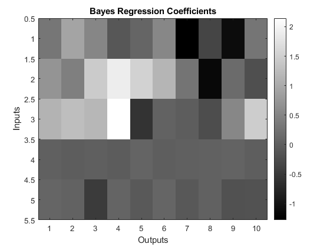
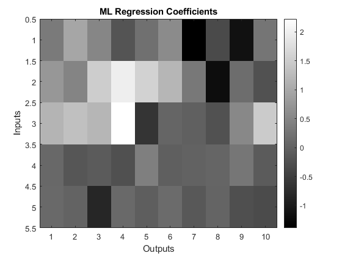

clear all
close all
N=100;
d=10;
p=5;
x=randn(N,p);
W=randn(p,d);
W(4:5,:)=0;
e=2*randn(N,d);
y=x*W+e;
options.pr = 'global';
options.verbose=1;
evalc('mlm_global = spm_mlm_bayes (y,x,options);');
options.pr = 'input';
evalc('mlm_in = spm_mlm_bayes (y,x,options);');
options.pr = 'output'
evalc('mlm_out = spm_mlm_bayes (y,x,options);');
disp('Comparison of shrinkage priors');
disp(sprintf('Log evidence for IS versus global = %1.2f',mlm_in.fm-mlm_global.fm));
disp(sprintf('Log evidence for OS versus global = %1.2f',mlm_out.fm-mlm_global.fm));
disp(sprintf('Log evidence for IS versus OS = %1.2f',mlm_in.fm-mlm_out.fm));
mlm=mlm_in;
figure
imagesc(mlm.wmean);
colormap gray
colorbar
ylabel('Inputs');
xlabel('Outputs');
title('Bayes Regression Coefficients');
figure
imagesc(mlm.wml);
colormap gray
colorbar
ylabel('Inputs');
xlabel('Outputs');
title('ML Regression Coefficients');
options =
struct with fields:
pr: 'output'
verbose: 1
Comparison of shrinkage priors
Log evidence for IS versus global = -7.53
Log evidence for OS versus global = -47.92
Log evidence for IS versus OS = 40.39
 